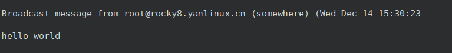
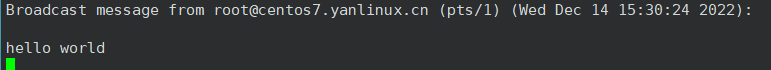
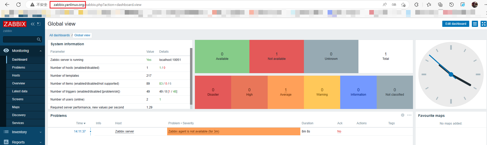

1 ansible 常用指令总结，并附有相关示例。
/usr/bin/ansible 主程序，临时命令执行工具/usr/bin/ansible-doc 查看配置文档，模块功能查看工具,相当于man/usr/bin/ansible-playbook 定制自动化任务，编排剧本工具,相当于脚本/usr/bin/ansible-pull 远程执行命令的工具/usr/bin/ansible-vault 文件加密工具/usr/bin/ansible-console 基于Console界面与用户交互的执行工具/usr/bin/ansible-galaxy 下载/上传优秀代码或Roles模块的官网平台
利用ansible实现管理的主要方式：
Ansible Ad-Hoc 即利用ansible命令，主要用于临时命令使用场景Ansible playbook 主要用于长期规划好的，大型项目的场景，需要有前期的规划过程
ansible 使用前准备
ansible 相关工具大多数是通过ssh协议，实现对远程主机的配置管理、应用部署、任务执行等功能
建议：使用此工具前，先配置ansible主控端能基于密钥认证的方式联系各个被管理节点
1.1 ansible-doc 此工具用来显示模块帮助,相当于man
格式
ansible-doc [options] [module...]
范例：
1 2 3 4 5 6
范例: 查看指定的插件
1 2 [13:38:40 root@ansible-rocky ~]$ ansible-doc -t connection -l
1.2 ansible 1.2.1 Ansible Ad-Hoc 介绍 Ansible Ad-Hoc 的执行方式的主要工具就是 ansible
1.2.2 ansible 命令用法 格式：
1 ansible <host-pattern> [-m module_name] [-a args]
选项说明：
1 2 3 4 5 6 7 8 9 10 11 12 13 --version timeout =TIMEOUT
范例：
1 2 3 4 5 6 7 8 9 10 11 12 13 14 15 16 17 18 19 20 21 22 23 24 25 26 27 28 29 30 31 32 33 34 35 36 37 38 39 40 41 42 43 44 45 46 47 48 49 50 51 52 53 54 55 56 57 58 59 60 61 "ansible_facts" : {"discovered_interpreter_python" : "/usr/libexec/platform-python" "changed" : false ,"ping" : "pong" "ansible_facts" : {"discovered_interpreter_python" : "/usr/bin/python3" "changed" : false ,"ping" : "pong" "ansible_facts" : {"discovered_interpreter_python" : "/usr/bin/python" "changed" : false ,"ping" : "pong" 'ls /root' ls : cannot open directory '/root' : Permission deniednon-zero return codels : cannot open directory '/root' : Permission deniednon-zero return codels : cannot open directory /root: Permission deniednon-zero return codeecho "yanlinux ALL=(ALL) NOPASSWD: ALL" >> /etc/sudoers'ls /root' -b'useradd magedu' -b'getent passwd magedu' -b
范例: 并发执行控制
1 2 3 4 'sleep 5' -f1'sleep 5' -f10
范例: 使用普通用户连接远程主机执行代替另一个用户身份执行操作
1 2 3 4 5 6 7 8 9 10 echo magedu:centos1 |chpasswd'whoami' -b --become-user=magedu
1.3 ansible-console 此工具可交互执行命令，支持tab，ansible 2.0+新增
1 执行用户@当前操作的主机组 (当前组的主机数量)[f:并发数]$
常用子命令：
设置并发数： forks n 例如： forks 10
切换组： cd 主机组 例如： cd web
列出当前组主机列表： list
列出所有的内置命令： ?或help
范例
1 2 3 4 5 6 7 8 9 10 11 12 13 14 15 16 17 18 19 20 21 22 23 24 25 26 27 28 29 30 31 32 33 34 35 36 37 38 [15:24:28 root@ansible-rocky ~]$ ansible-console help or ? to list commands."ansible_facts" : {"discovered_interpreter_python" : "/usr/libexec/platform-python" "changed" : false ,"ping" : "pong" "ansible_facts" : {"discovered_interpreter_python" : "/usr/bin/python3" "changed" : false ,"ping" : "pong" "ansible_facts" : {"discovered_interpreter_python" : "/usr/bin/python" "changed" : false ,"ping" : "pong" cd websrvscd appsrvs
1.4 ansible-playbook 此工具用于执行编写好的 playbook 任务
1 2 3 4 5 6 7 8 9 10 11 12 13 14 15 16 17 18 19 20 21 [15:27:57 root@ansible-rocky ~]$ vi hello.ymlcommand : /usr/bin/wall hello world


1.5 ansible-vault 此工具可以用于加密解密yml文件
格式：
1 ansible-vault [create|decrypt|edit|encrypt|rekey|view]
范例:
1 2 3 4 5 6 7 8 9 10 11 12 13 14 15 16 17 18 19 20 21 22 23 24 25 26 27 28 29 30 31 32 33 34 35 36 37 38 39 40 41 42 43 44 45 46 47 48 49 50 51 52 53 54 55 56 57 58 59 60 61 62 63 64 65 66 67 68 69 70 71 72 73 74 75 76 77 78 79 80 81 82 83 84 85 86 87 88 89 90 91 92 93 94 95 96 97 98 99 100 101 102 103 104 105 106 107 cat hello.yml $ANSIBLE_VAULT ;1.1;AES256cat hello.yml command : /usr/bin/wall hello worldcommand : /usr/bin/wall hello world
1.6 ansible-galaxy Galaxy 是一个免费网站, 类似于github网站, 网站上发布了很多的共享的roles角色。
Ansible 提供了ansible-galaxy命令行工具连接 https://galaxy.ansible.com 网站下载相应的roles, 进行init(初始化、search( 查拘、install(安装、 remove(移除)等操作。
范例
1 2 3 4 5 6 7 8 9 10 11 12 13 14 15 16 17 18 19 20 21 22 23 24 25 26 27 28 for LAMP hackers.
2 总结ansible role目录结构及文件用途。 roles目录结构：
1 2 3 4 5 6 7 8 9 10 11 12 13 14 15 16 17 18 19 ├── playbook1.yml
Roles各目录作用
roles/project/ :项目名称,有以下子目录
files/ ：存放由copy或script模块等调用的文件templates/：template模块查找所需要模板文件的目录tasks/：定义task,role的基本元素，至少应该包含一个名为main.yml的文件；其它的文件需要在此文件中通过include进行包含handlers/：至少应该包含一个名为main.yml的文件；此目录下的其它的文件需要在此文件中通过include进行包含vars/：定义变量 ，至少应该包含一个名为main.yml的文件；此目录下的其它的变量文件需要在此文件中通过include进行包含,也可以通过项目目录中的group_vars/all定义变量,从而实现角色通用代码和项目数据的分离meta/：定义当前角色的特殊设定及其依赖关系 ,至少应该包含一个名为main.yml的文件，其它文件需在此文件中通过include进行包含default/：设定默认变量时使用此目录中的main.yml文件，比vars的优先级低
3 使用ansible playbook实现一个mysql角色。 1 2 3 4 5 6 7 8 9 10 11 12 13 14 15 16 17 18 19 20 21 22 23 24 25 26 27 28 29 30 31 32 33 34 35 36 37 38 39 40 41 42 43 44 45 46 47 48 49 50 51 52 53 54 55 56 57 58 59 60 61 62 63 64 65 66 67 68 69 70 71 72 73 74 75 76 77 78 79 80 81 82 83 84 85 86 87 88 89 90 91 92 93 94 95 96 97 98 99 100 101 102 103 104 105 106 107 108 109 110 111 112 113 114 115 116 117 118 119 120 121 122 123 124 125 126 127 128 129 130 131 132 133 134 135 136 137 138 139 140 141 142 143 144 145 146 147 148 149 150 151 152 153 154 155 156 157 158 159 160 161 tail -n9 hosts "mysql-{{db_version}}-linux-glibc2.12-x86_64.tar.xz" "/data/mysql" "lgq123456**" ls roles/mysql/files/cat roles/mysql/tasks/main.yml "{{ item }}" yes shell="/sbin/nologin" create_home=no group={{db_group}}"{{ db_file }}" "/usr/local/" "/usr/local/mysql-{{ db_version }}-linux-glibc2.12-x86_64" "/usr/local/mysql" link "PATH=/usr/local/mysql/bin:$PATH " "/etc/profile.d/mysql.sh" "/etc/my.cnf" "/data" "/usr/local/mysql/bin/mysqld --initialize-insecure --user={{ db_user }} --datadir={{ db_data_dir }}" "/usr/local/mysql/support-files/mysql.server" "/etc/init.d/mysqld" yes '+x' "/usr/local/mysql/bin/mysqladmin -uroot password {{ db_root_passwd }}" cat roles/mysql/templates/my.cnf.j2 cat mysql_role.yml
4 基于角色完成部署LNMP架构，并支持一键发布，回滚应用。同时基于zabbix角色批量部署zabbix。 4.1 部署LNMP架构 4.1.1 目录结构 1 2 3 4 5 6 7 8 9 10 11 12 13 14 15 16 17 18 19 20 21 22 23 24 25 26 27 28 29 30 31 32 33 34 35 36 37 38 39 40 41 42 43 [18:57:47 root@ansible-rocky opt]$ tree /opt/
4.1.2 LNMP架构所需主机清单以及变量设置 1 2 3 4 5 6 7 8 9 10 11 12 13 14 15 16 17 18 19 20 21 22 23 24 25 [18:58:15 root@ansible-rocky opt]$ cat hosts "1.20.2" "http://nginx.org/download/nginx-{{ version }}.tar.gz" "/apps/nginx" "www.yanlinux.org" "/data/wordpress" "wordpress-6.1.1-zh_CN" "mysql-{{db_version}}-linux-glibc2.12-x86_64.tar.xz" "/data/mysql" "lgq123456**"
4.1.2 实现编译安装nginx角色 1 2 3 4 5 6 7 8 9 10 11 12 13 14 15 16 17 18 19 20 21 22 23 24 25 26 27 28 29 30 31 32 33 34 35 36 37 38 39 40 41 42 43 44 45 46 47 48 49 50 51 52 53 54 55 56 57 58 59 60 61 62 63 64 65 66 67 68 69 70 71 72 73 74 75 76 77 78 79 80 81 82 83 84 85 86 87 88 89 90 91 92 93 94 95 96 97 98 99 100 101 102 103 104 105 106 107 108 109 110 111 112 113 114 115 116 117 118 119 120 121 122 123 124 125 126 127 128 129 130 131 132 133 134 135 136 137 138 139 140 141 142 cat nginx/tasks/main.yml yes gid=80yes shell="/sbin/nologin" create_home=nosource "{{ url }}" "/usr/local/src" yes "./configure --prefix={{install_dir}} --user=nginx --group=nginx --with-http_ssl_module --with-http_v2_module --with-http_realip_module --with-http_stub_status_module --with-http_gzip_static_module --with-pcre --with-stream --with-stream_ssl_module --with-stream_realip_module && make && make install" chdir : "/usr/local/src/nginx-{{ version }}" "{{install_dir}}/sbin/nginx" "{{install_dir}}/conf/nginx.conf" "{{install_dir}}/conf/conf.d" "{{install_dir}}" yes "/lib/systemd/system/nginx.service" "{{install_dir}}/sbin/nginx -t" 'successful' )false yes yes cat nginx/handlers/main.yml cat nginx/templates/nginx.conf.j2 '{"@timestamp":"$time_iso8601",' '"host":"$server_addr",' '"clientip":"$remote_addr",' '"size":$body_bytes_sent,' '"responsetime":$request_time,' '"upstreamtime":"$upstream_response_time",' '"upstreamhost":"$upstream_addr",' '"http_host":"$host",' '"uri":"$uri",' '"xff":"$http_x_forwarded_for",' '"referer":"$http_referer",' '"tcp_xff":"$proxy_protocol_addr",' '"http_user_agent":"$http_user_agent",' '"status":"$status"}' ;cat nginx/templates/nginx.service.j2 $MAINPID true cat /opt/nginx_role.yml
4.1.4 实现php-fpm角色 1 2 3 4 5 6 7 8 9 10 11 12 13 14 15 16 17 18 19 20 21 22 23 24 25 26 27 28 29 30 31 32 33 34 35 36 37 38 39 40 41 42 43 44 45 46 47 48 49 50 51 52 53 54 55 56 57 58 59 60 61 62 63 64 65 66 67 68 69 70 71 72 73 74 75 76 77 78 79 80 81 82 83 84 85 cat /opt/roles/php-fpm/templates/php-fpm.conf.j2 $fastcgi_script_name ;cat /opt/roles/php-fpm/tasks/main.yml"{{ item }}" yes "{{ install_dir }}/conf/conf.d/php-fpm.conf" yes cat /opt/roles/php-fpm/handlers/main.yml cat /opt/php-fpm_role.yml
4.1.5 实现MySQL角色 注意：ansible playbook调用mysql系列模块需要依赖python3-mysql包和利用pip安装pymysql
1 2 3 4 5 6 7 8 9 10 11 12 13 14 15 16 17 18 19 20 21 22 23 24 25 26 27 28 29 30 31 32 33 34 35 36 37 38 39 40 41 42 43 44 45 46 47 48 49 50 51 52 53 54 55 56 57 58 59 60 61 62 63 64 65 66 67 68 69 70 71 72 73 74 75 76 77 78 79 80 81 82 83 84 85 86 87 88 89 90 91 92 93 94 95 96 97 98 99 100 101 102 103 104 105 106 107 108 109 110 111 112 113 114 115 116 117 118 119 120 121 122 ls roles/mysql/files/cat roles/mysql/tasks/main.yml "{{ item }}" yes shell="/sbin/nologin" create_home=no group={{db_group}}"{{ db_file }}" "/usr/local/" "/usr/local/mysql-{{ db_version }}-linux-glibc2.12-x86_64" "/usr/local/mysql" link "PATH=/usr/local/mysql/bin:$PATH " "/etc/profile.d/mysql.sh" "/etc/my.cnf" "/data" "/usr/local/mysql/bin/mysqld --initialize-insecure --user={{ db_user }} --datadir={{ db_data_dir }}" "/usr/local/mysql/support-files/mysql.server" "/etc/init.d/mysqld" yes '+x' "/usr/local/mysql/bin/mysqladmin -uroot password {{ db_root_passwd }}" "localhost" "root" "{{ db_root_passwd }}" "{{ db_data_dir }}/mysql.sock" "{{ wp_db_name }}" "{{ wp_db_name }} is defined" "localhost" "root" "{{ db_root_passwd }}" "{{ db_data_dir }}/mysql.sock" "{{ wp_db_user}}" "{{ wp_db_passwd }}" "{{ wp_db_name }}.*:ALL" "10.0.0.%" "{{ wp_db_user }} is defined" cat roles/mysql/templates/my.cnf.j2 cat mysql_role.yml
4.2 基于zabbix角色批量部署zabbix 依赖上面搭建好的LNMP架构实现
4.2.1 部署zabbix-server 1 2 3 4 5 6 7 8 9 10 11 12 13 14 15 16 17 18 19 20 21 22 23 24 25 26 27 28 29 30 31 32 33 34 35 36 37 38 39 40 41 42 43 44 45 46 47 48 49 50 51 52 53 54 55 56 57 58 59 60 61 62 63 64 65 66 67 68 69 70 71 72 73 74 75 76 77 78 79 80 81 82 83 84 85 86 87 88 89 90 91 92 93 94 95 96 97 98 99 100 101 102 103 104 105 106 107 108 109 110 111 112 113 114 115 116 117 118 119 120 121 122 123 124 125 126 127 128 129 130 131 132 133 134 135 136 137 138 139 140 141 142 143 144 145 146 147 148 149 150 151 152 153 154 155 156 157 158 159 160 161 162 163 164 165 166 167 168 169 170 171 172 173 174 175 176 177 178 179 180 181 182 183 184 185 186 187 188 189 190 191 192 193 194 195 196 197 198 199 200 201 202 203 204 205 206 207 208 209 210 211 212 213 214 215 216 217 218 219 220 221 222 223 224 225 226 227 228 229 230 231 232 233 234 235 236 237 238 239 240 241 cat zabbix_server.yml cat /opt/roles/zabbix_server/tasks/main.yml "ansible_zabbix" "zabbix repo" "https://mirrors.aliyun.com/zabbix/zabbix/{{ zabbix_version }}/rhel/{{ ansible_distribution_major_version }}/{{ ansible_architecture }}/" yes "https://mirrors.aliyun.com/zabbix/zabbix-official-repo.key" "{{ item }}" chown zabbix-webyes "{{ install_dir }}/conf/conf.d/zabbix_server_ngx.conf" "/etc/php-fpm.d/zabbix.conf" yes cat /opt/roles/zabbix_server/handlers/main.yml cat /opt/roles/zabbix_server/templates/zabbix.conf.j2 '^$|#' /opt/roles/zabbix_server/templates/zabbix_server.conf.j2 cat /opt/roles/zabbix_server/templates/zabbix-server-ngx.conf.j2$uri $uri / =404;return 404;$fastcgi_script_name ;$fastcgi_script_name ;$query_string ;$request_method ;$content_type ;$content_length ;

4.2.2 部署zabbix-agent 1 2 3 4 5 6 7 8 9 10 11 12 13 14 15 16 17 18 19 20 21 22 23 24 25 26 27 28 29 30 31 32 33 34 35 36 37 38 39 40 41 42 43 44 45 46 47 48 49 50 51 52 53 54 55 56 57 58 59 60 61 62 63 64 65 66 67 68 69 70 71 72 73 74 75 76 77 78 79 80 81 82 83 84 cat /opt/roles/zabbix_agent2/tasks/main.yml "ansible_zabbix" "zabbix repo" "https://mirrors.aliyun.com/zabbix/zabbix/{{ zabbix_version }}/rhel/{{ ansible_distribution_major_version }}/{{ ansible_architecture }}/" yes "https://mirrors.aliyun.com/zabbix/zabbix-official-repo.key" for centos or rocky"Rocky" or ansible_distribution == "Centos" for centos or ubuntuyes "Ubuntu" "/etc/zabbix/zabbix_agent2.conf" "/etc/zabbix" yes cat /opt/roles/zabbix_agent2/handlers/main.yml cat /opt/roles/zabbix_agent2/templates/zabbix_agent2.conf.j2 log
4.2.3 测试 1 2 3 4 5 6 7 8 [23:15:29 root@rocky8 /etc/zabbix]$ zabbix_get -s 10.0.0.18 -k mem_use_percent